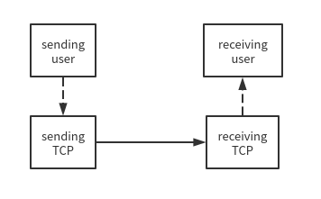
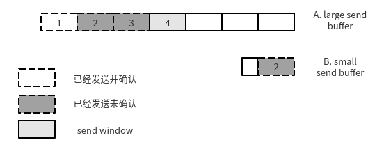
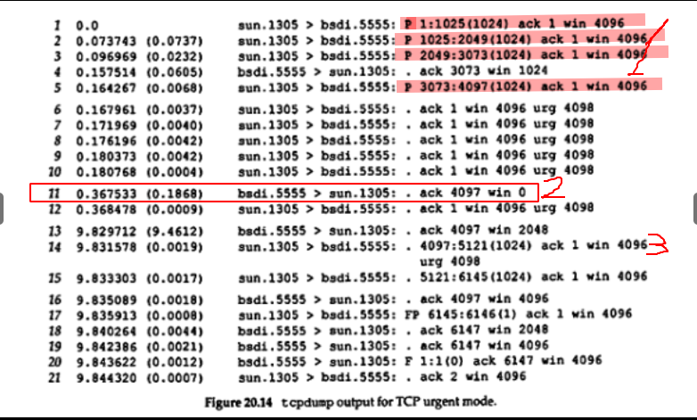
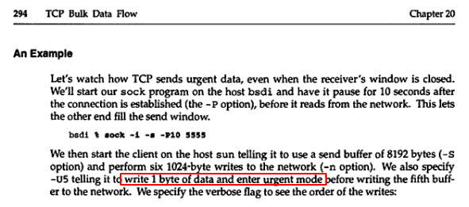
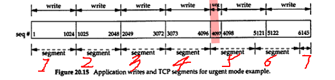

TCP/IP 详解 ：如果将数据从 send buffer 中发送出去会导致 send buffer 清空, 则应该在此数据的首部加上 PSH .
先看 rfc793 如何定义 PUSH:

TCP/IP 详解： 大部分 API, 包括 Linux socket API 不提供设置 PSH 的接口. 大部分 Berkeley-derived 实现都是自动设置 PSH flag, 判断的依据就是看发送数据之后, send buffer 是否被清空.
结合 TCP/IP Architecture, Design, and Implementation in Linux 我的理解如下：

将 A buffer 中的 4 发送出去不会触发 PSH, 将 B buffer 中的 2 发送出去则触发 PSH .
send buffer 大小可以调整, 详情见 tcp_wmem.
可以看出, 如果 send buffer 很小, 则经常可以看到带 PSH 的报文. TCP/IP 详解 的实验并不告诉我们 send buffer 的大小, 所以它们并不能证明书的描述.
接受端收到 PSH = 1 的报文后, 应该马上响应应用层的 read(), 将 receive buffer 的数据拷贝到应用层.
TCP/IP 详解：urgent data 被放入字节流中, 接受端可以看到 URG flag, 怎么处理完全由接受端决定.

接受端的窗口为 0 的时候（2）, 发送端依然可以发出消息, 告诉接受端 urgent pointer 是 4098.
如果接受端不回复超过 4098 的 ACK, 发送端会一直发 urg 包（3）. 超过 4098, 发送报文不再是 URG, 见第 15 行.
实验中的 sun.1305 主机将紧急指针 urgent pointer 设置为紧急数据最后一个 byte 加 1 位, 紧急数据是指进入紧急状态后的数据, 关键是, 什么是进入紧急状态后的数据, 有以下可能：
回去看实验前提：sock 程序在字节流中写入一个 byte 的数据, 与要传输的数据无关.

这就解释了书中图 20.15 为什么这么画, 因为发送端将紧急事件也记录在字节流中, 这个事件必然有特殊标记, 比如 FF, 原本 1024 个字节的正文被占了一个字节, 导致最后一个正文字节单独发送.

TCP 只负责发送内容, 如何解释内容由上层应用决定, 将 URG 设置为 1, 并设置紧急指针, 接受端收到后, TCP 向应用进程发送一个信号
rfc793 p.47:
The receiving TCP will signal the urgent condition to the receiving process if the urgent pointer indicates that data preceding the urgent pointer has not been consumed by the receiving process.
这个信号可能是具体的信号(RFC 并不规定必须是 Linux IPC 的信号), 根据这个解释, TCP 是通过 SIGURG 来通知应用进程.
信号（不管是哪种实现）完全可以将紧急指针的值告知应用进程, 应用进程根据指针获取紧急数据, 做出不同响应, 比如 26.2 节 p.394 Rlogin 协议有 4 种紧急数据：0x02, 0x10, 0x20, x80, 其中 0x02 表示客户端刷新显示输出.